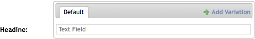
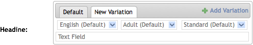
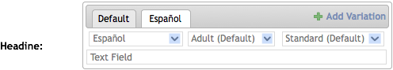
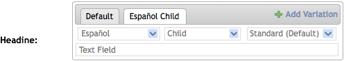
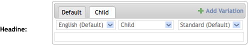

django-textvariation v0.1 documentation
Textual variations are common in current websites, but are usually only implemented in one dimension: language. Django Text Variations allows you to have text (potentially) vary on multiple dimensions such as language, text difficulty, and audience.
In Django Text Variations, a variation is a specific combination of variants from each dimension.
A dimension is one set of ways in which text may vary, such as language. Each dimension has specific ways in which it could vary, such as English and Spanish, called variants.
In further examples, we’ll assume that we need text to (potentially) vary on three dimensions.
In many cases, possibly most, you don’t need text variations for every possible combination of dimensions. In the case when a specific combination is requested but does does not exist for that object, another variation is delivered. The variation delivered is based on the initial request, the priority of the dimensions, and the available variations.
Django Text Variations is designed to allow for a default, which is the initial text provided, and is assigned to a combination based on the configuration of the dimensions. In the case where no other variations are provided, the default is always delivered.
Within each dimension, there may be a preference in which alternates are resolved. In the case of a language dimension, you may have an object missing a Mexican Spanish variation look first for a Spanish variation, and finally use default English variation. A missing French variation would simply look for an English variation.
Mexican Spanish
+-> Spanish
+-> English
French
+-> English
Each text variation dimension defines a list of variants. Each variant has a “code” or “slug”, a name, and a fall back variant. One variant should not have a fall back. This is the default variant for the dimension.
Note
If a dimension contains multiple variants without a fall back variant, strange results may occur.
Because there are multiple ways to find the next potential variation, if the requested variation is missing, you specify the priority of the dimensions.
So, in our example dimensions, we could define them as:
| Dimension | Name | Code | Fallback |
|---|---|---|---|
| Audience | Adult | ad | None |
| Teen | tn | Adult | |
| Child | cd | Teen | |
| Text Difficulty | Low | l | Standard |
| Standard | s | None | |
| Advanced | a | Standard | |
| Language | English | en | None |
| Español | es | English | |
| Español mexicano | es-mx | Español | |
| Français | fr | English |
And set the dimension priority as:
How the priority determines the select of the variation is covered in the next section.
When a requested variation is not available, Django Text Variation looks for the next available variation by falling back through each variant of each dimension in reverse order of priority. In this way, if language is the highest priority, look for a variation that is the fall back of the other dimensions, but within the selected language before falling back on the next available language variation.
Here is an example:
| # | Audience | Text Difficulty | Language |
|---|---|---|---|
| 1 | Adult | Standard | Español mexicano |
| 2 | Adult | Standard | Español |
| 3 | Adult | Standard | English |
In this case, the only variation from the default is language, so that is the only dimension that changes.
| # | Audience | Text Difficulty | Language |
|---|---|---|---|
| 1 | Child | Standard | Español mexicano |
| 2 | Teen | Standard | Español mexicano |
| 3 | Adult | Standard | Español mexicano |
| 4 | Child | Standard | Español |
| 5 | Teen | Standard | Español |
| 6 | Adult | Standard | Español |
| 7 | Child | Standard | English |
| 8 | Teen | Standard | English |
| 9 | Adult | Standard | English |
Now there are two dimension deviations from the default variation. Since the higher priority of these two is the Language dimension, each variant of the Audience dimension is substituted before trying each variant on the Language dimension.
| # | Audience | Text Difficulty | Language |
|---|---|---|---|
| 1 | Child | Low | Español mexicano |
| 2 | Child | Standard | Español mexicano |
| 3 | Teen | Low | Español mexicano |
| 4 | Teen | Standard | Español mexicano |
| 5 | Adult | Low | Español mexicano |
| 6 | Adult | Standard | Español mexicano |
| 7 | Child | Low | Español |
| 8 | Child | Standard | Español |
| 9 | Teen | Low | Español |
| 10 | Teen | Standard | Español |
| 11 | Adult | Low | Español |
| 12 | Adult | Standard | Español |
| 13 | Child | Low | English |
| 14 | Child | Standard | English |
| 15 | Teen | Low | English |
| 16 | Teen | Standard | English |
| 17 | Adult | Low | English |
| 18 | Adult | Standard | English |
The user has requested a variation in which all three dimensions are different from the default. Using the dimension priority, Text Difficulty variants are substituted before altering the audience or Language.
This fall back methodology allows a content producer to specify a variation that applies for only one dimension. The most specific variation relating to the requested variation is returned.
Initially, a field with variations will show a tabbed interface with a single tab and a button to add a variation.
Clicking on this link creates a new tab with selection boxes for each dimension.
Changing one of the dimensions changes the name of the tab.
Changing another dimensions changes the name of the tab again.
In some cases you may want to specifically exclude variants of a dimension from returning content. Content that is inappropriate for children is a good example.
To exclude content, simply create an empty variation. If you changed the Audience dimension to “Child” and left the field blank, then the template could properly display something like “This content is inappropriate for children.”
